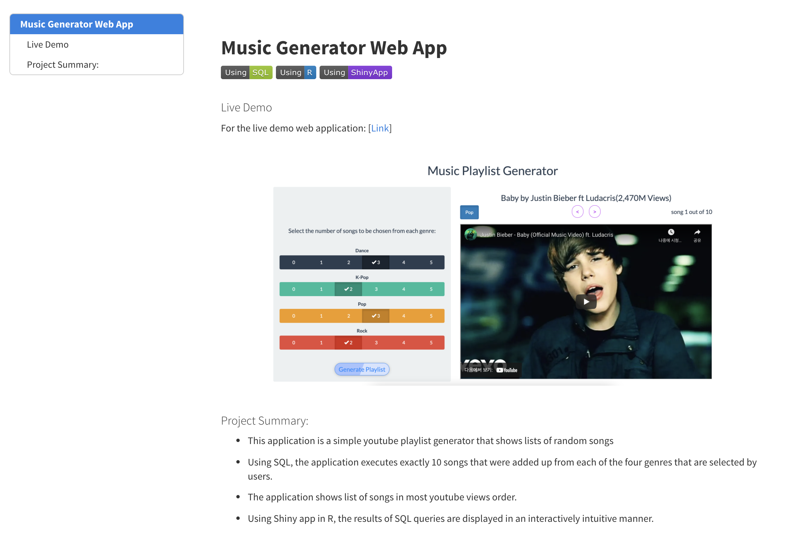

석사 진학 후 수업에서 여러가지 데이터 분석 프로젝트 과제들을 개인 또는 팀의 형태로 진행했을 것이다. 단순히 좋은 성적을 받고 끝이 아니라, 좀 더 잘 가공하여 내 포트폴리오로 활용해 볼 수 있다.
많은 데이터 분석가들이 포트폴리오로 github repo 링크를 단순히 공유하는 것을 많이 보았다. 여기서 더 나아가 더 잘 정리된 문서의 형태로 보여주는 것은 매우 중요하다.
다만, 여기에서 주의해야 할 부분은 데이터 관련 부분이다. 어떤 프로젝트들은 공개된 데이터를 활용한 과제들도 있고, 아니면 공개할 수 없는 데이터를 활용한 과제들도 있을 것이다. 따라서, 교수님께 포트폴리오로 활용해도 좋은지 여부를 꼭 문의하고 분석 결과물을 공유하도록 하자.
보통 과제로 주어지는 데이터 분석 프로젝트들은 코드, 분석 보고서, PPT 슬라이드 등으로 구성된다. 이 중에서 나는 되도록이면 많은 내용을 공유할 수 있는 형태로 가공하는 것을 추천한다. 대충 입력하고 주석을 달지 않은 코드는 꼼꼼하게 syntax에 맞게 정리하도록 해야 한다. 분석을 통해 도출한 인사이트를 정리한 보고서, 그리고 발표 슬라이드도 함께 하이퍼 링크를 통해 공유하는 것이 좋다. 아래 사진은 멘토링 했던 한 학생의 개인 블로그 예시이다.
